Formerly a Senior Computer Vision Scientist and a founding member of the Autonomous Drone Team embedded with ObjectVideo Labs division at Alarm.com (McLean, VA, USA), I led the technical roadmap for the Drone Perception framework to achieve Autonomous Navigation. My work there centered on researching and deploying advanced perception frameworks at the intersection of Estimation theory, Computer Vision, and Machine Learning fusion. My passion lies in designing robust, intelligent robotic systems that fuse multi-modal vision and non-vision sensors to enable real-time decision-making on constrained edge hardware.
My decade-long career bridges both worlds of modern robotics, having spent the initial 3 years of my career prototyping and deploying high-precision physical industrial robots at Siemens Application Center (India/Germany), followed by 7-8 years dedicated to building spatial Perception/Intelligence for Autonomous Drones in GPS-denied environments. This practical expertise is backed by a Master’s degree from North Carolina State University (Raleigh, USA) featuring a capstone project for Aerial Blimp Navigation and an Autonomy & Robotics research internship at Siemens Corporate Technology (Princeton, NJ, USA).
GPA: 3.87
Graduated May 2018
GPA: 4.0
University Ranker: Ranked 1st in the Electrical Engineering department at my college and 5th overall among all affiliated engineering colleges under the university.
National Examination Milestone: Ranked among Top 1.2% in the national GATE examination organized by the Indian Institute of Technology (IIT)—a competitive performance that directly facilitated entry into Siemens Research.
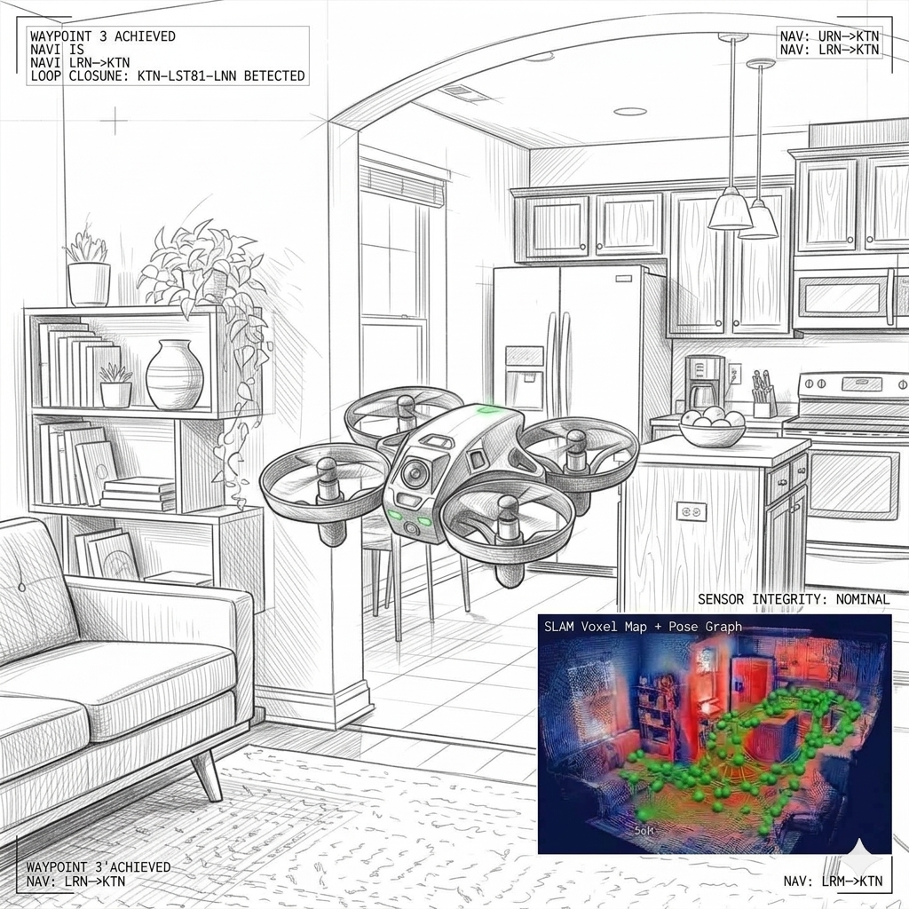
I was part of a team that focused on the development of a Gantry Robot that could behave autonomously and perform decision-making tasks.
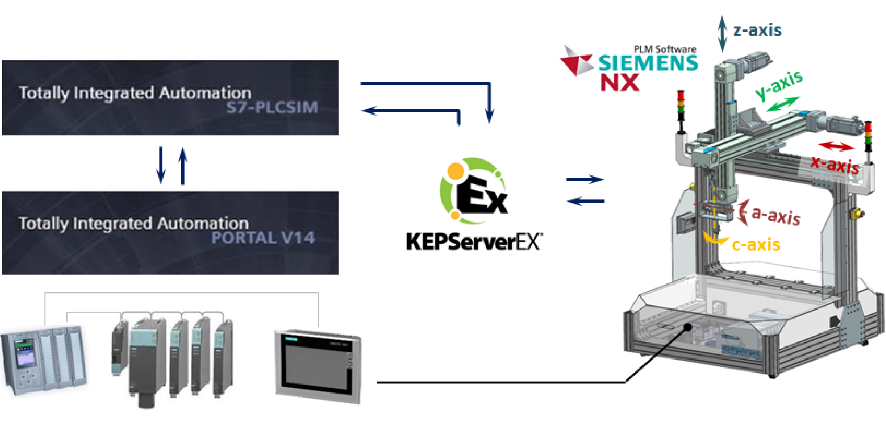
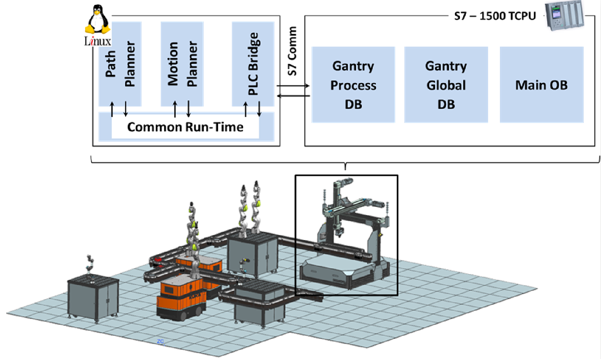
At Siemens, I was part of an application development team that worked towards prototyping cyber-physical systems or mechatronics-based solutions for high dynamic motion control within the production and material handling industry with micrometer precision.
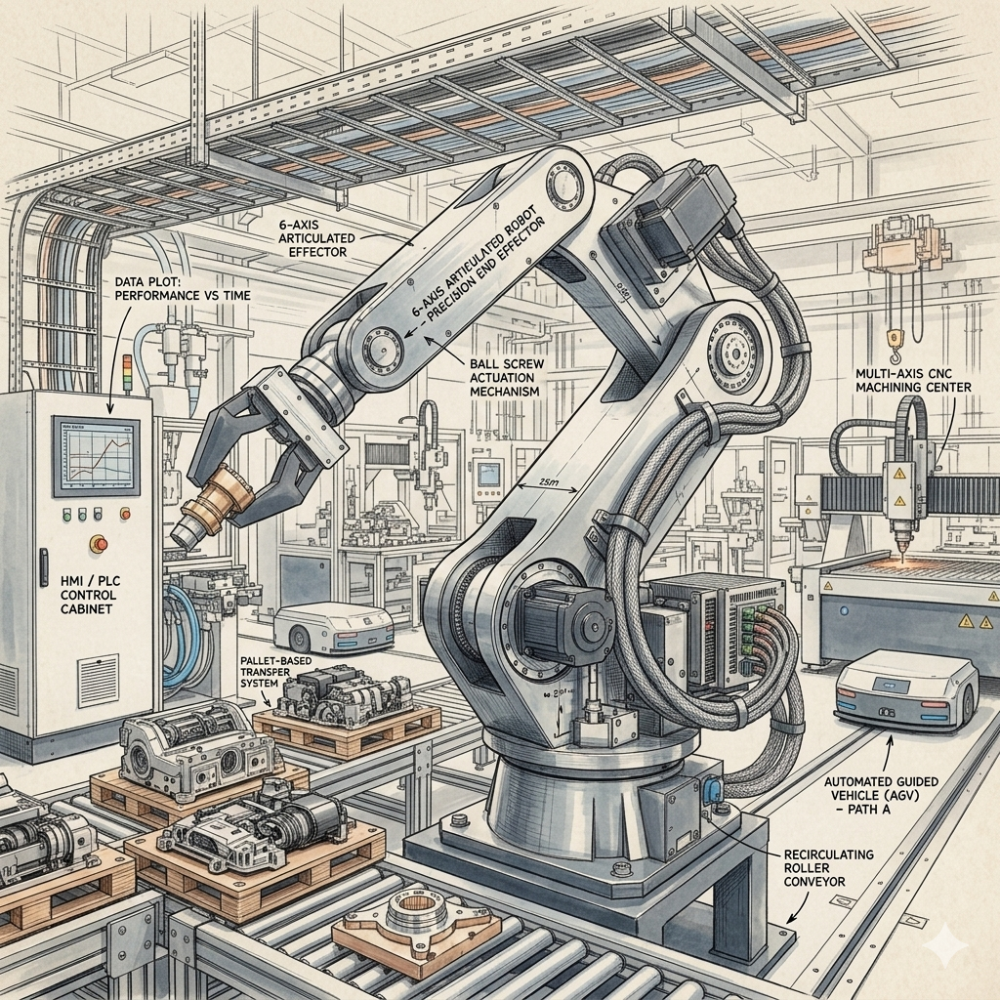
Led the technical perception roadmap through full-lifecycle product validation, scaling advanced computer vision pipelines from initial EVT (Engineering Verification Testing) prototypes to production-hardened DVT (Design Verification Testing) deployments on constrained edge-drone hardware.
Researched and integrated deep matchers (ViTs) and deep feature extractors (CNNs) into a conventional RGB-D SLAM pipeline to significantly improve lighting invariance and BoW RAM constraint mitigation. Compressed, quantized, and benchmarked these neural models to optimize inference speeds for resource-constrained edge-drone deployment.
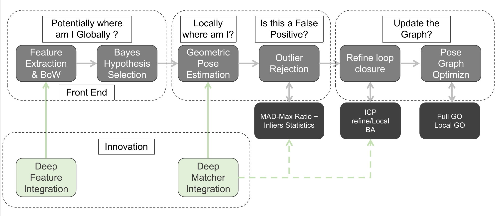
Researched and integrated deep matchers (ViTs) and deep feature extractors (CNNs) into a conventional RGB-D SLAM pipeline to significantly improve lighting invariance and BoW RAM constraint mitigation. Compressed, quantized, and benchmarked these neural models to optimize inference speeds for resource-constrained edge-drone deployment.
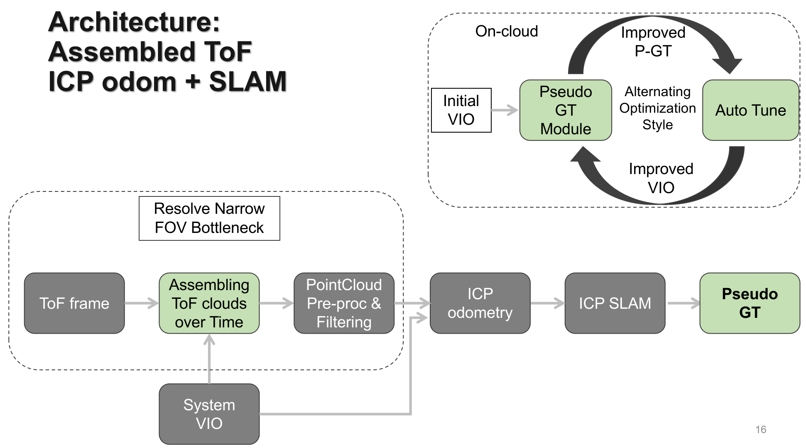
Researched and engineered a 3-DOF coordinated motion control system for an ultrasonic welding robot using SIEMENS controllers. Programmed multi-axis path interpolation algorithms featuring Kinematic Profile generation and Dynamic Load compensation based on the assembly's moment of inertia. Implemented high-precision trajectory tracking to achieve micrometer-level positioning accuracy for welding sequential nodes taught via a custom-built HMI. Deployed and pilot-tested the system at a automotive OEM, driving a 1.5x optimization in production cycle efficiency
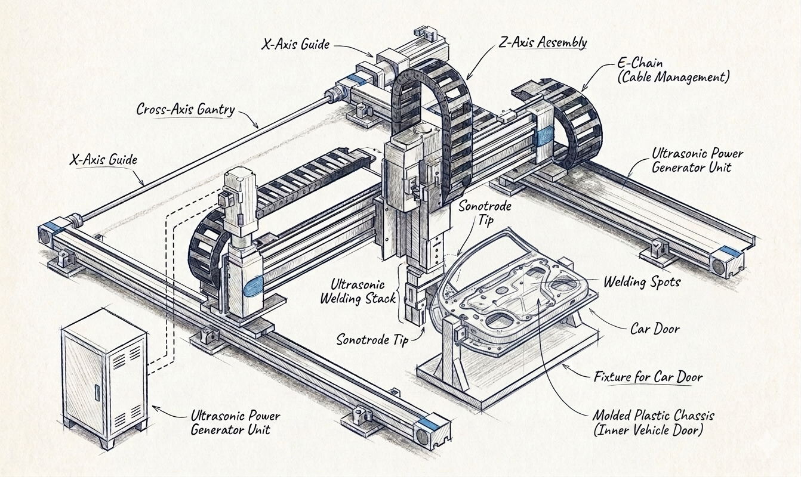
The Software library was developed using structure control language (embedded C) in SIEMENS Controllers. The development aimed towards easy use of the basic functions that allows the end user to implement the core functionality as demanded by the application with less possible overhead time. The functional blocks within the library are generalized to include most of the functionality but its an open-source library that allows the end user to modify the functionality as per the specifics of certain application. The library contains around 30 functional blocks that renders various mathematical as well as technological functionality for the motion control of converting applications. The function blocks can be combined to implement a control mechanism for motion control. Few example to list are the tension control using speed or torque control.
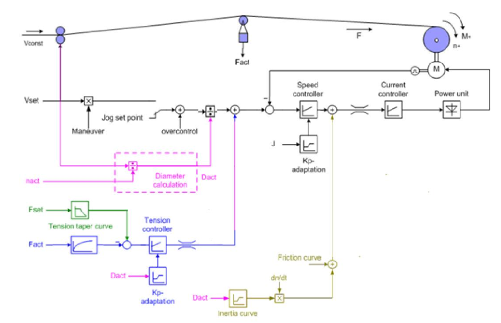
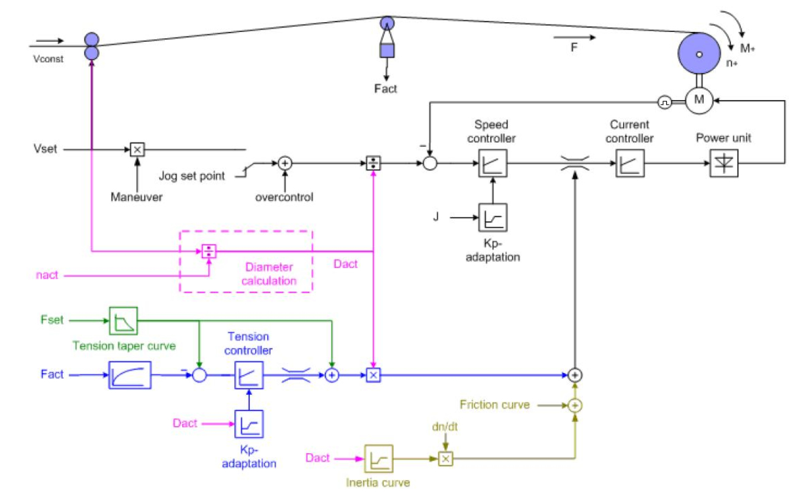
The software development in SIEMENS controller aimed towards controlling three servo axis in a Position synchronized manner. The developed library was implemented and successfully demonstrated on clock kit where the three hands of the clock formed the three axis of motion that were Position synchronized.
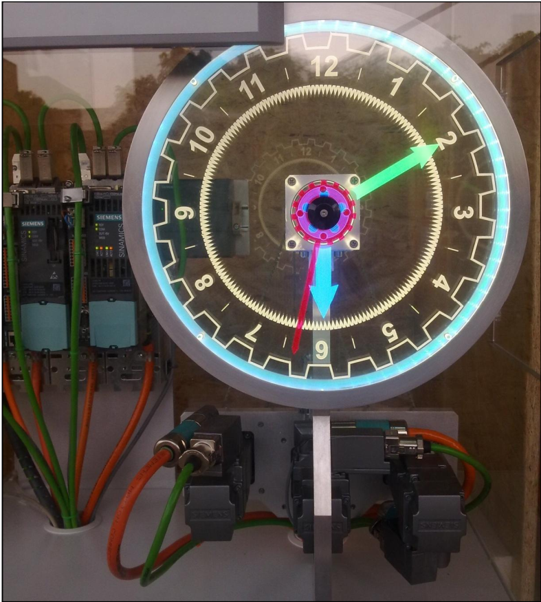
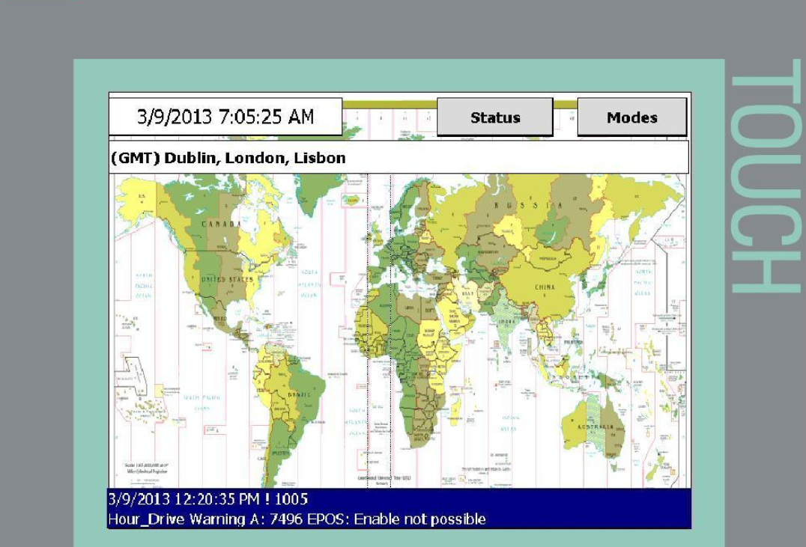
The software development in SIEMENS controller aimed towards non-linear position synchronization between the film feeder and conveyor to get a pulling effect on the film for packaging. The goal was achieved using electronic-CAM technology which generates the same motion as with a mechanical cam-shaft. The development was pilot tested at an OEM that develops Blister packaging machines.
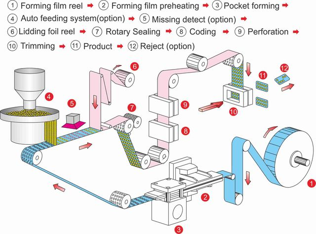
The goal of this project was to create two autonomous vehicles, one ground and other aerial to map and navigate certain environments, like construction sites, autonomously. The aerial vehicle which in our case happened to be an RC blimp enhanced the autonomous navigation task by providing an aerial view of the site to the ground vehicle (HUSKY) which earlier only relied on the stereo vision mounted on it. While performing this task the aerial blimp also had to autonomously navigate the environment based on the Visual-Inertial odometry data that it estimated from the Inertial and monocular vision sensors onboard. The development of the aerial blimp was segregated in three parts, Hardware interfacing and firware/driver development, SLAM and Context Awareness. I contributed by assisting the developemnt of the sensor interfacing/ firmware development and control algorithm development of the aerial blimp and implementation of Visual Intertial SLAM (VINS-MONO). The sensor firmware development and control algorithm were developed on a light weight yet powerful single board computers like Raspberry Pi 3 while we implemented complex algorithm like VINS-MONO slam on NVIDIA Jetson TX1. All the development was made using ROS package structure which allowed the Raspberry Pi and NVIDIA Jetson to share data over ros topics.
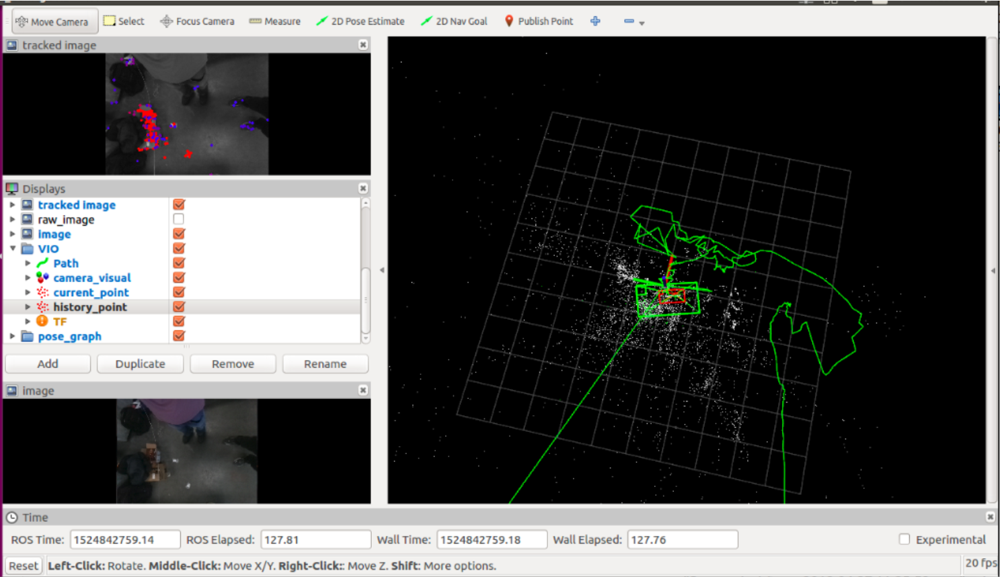
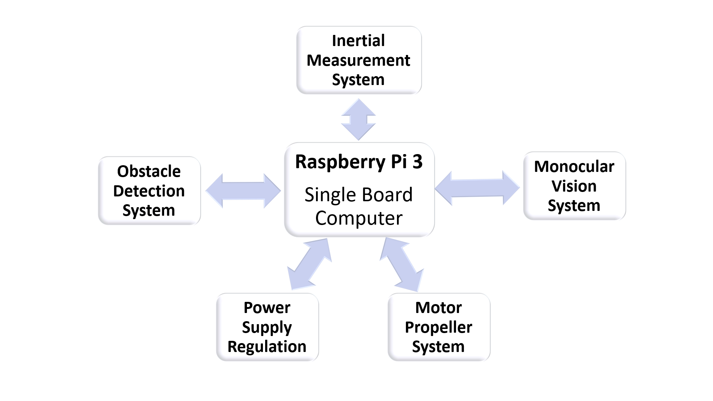
This project aimed towards estimation of the respiratory rate of an individual using accelerometer data, heart rate and body temperature. For this project we implemented two model: First, using an Artificial Neural Network that does not take into account the temporal dynamic; Second, I used a KALMAN filter on top of ANN that basically acts as a filter to further improve the output. With this project I was succesfully able to estimate the respiratory rate with an RMSE of 2.98 in first case which improved to 2.12 in second case.
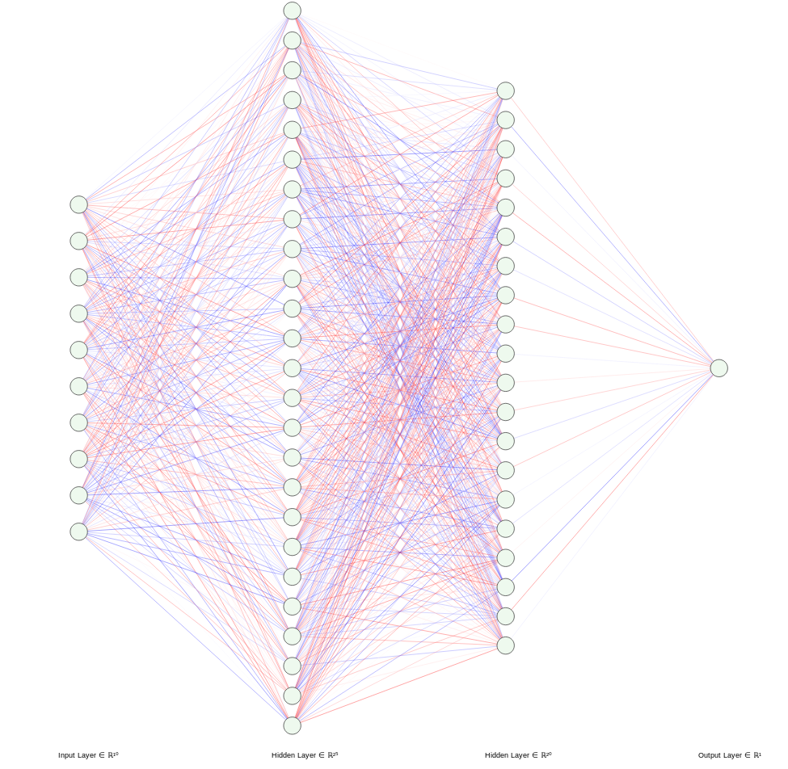
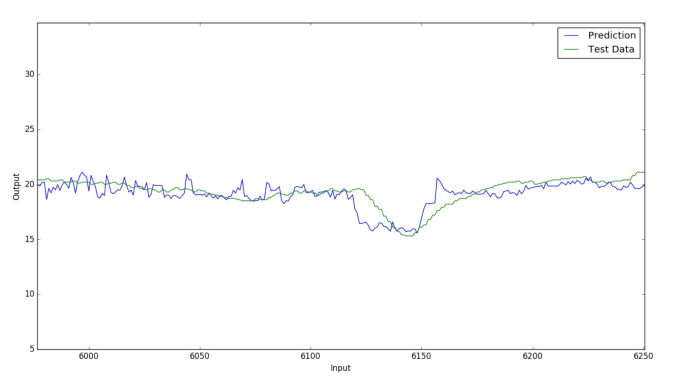
In this project, I implemented a paper titled 'Sematic Segmentation with SegNet model' which focuses on a novel encoder decoder technique based on VGG-13 fully convolutional architecture. The task was to port the original code in CAFFE to Keras and test it with CamVid dataset. We succesfully implemented it with 91% accuracy.
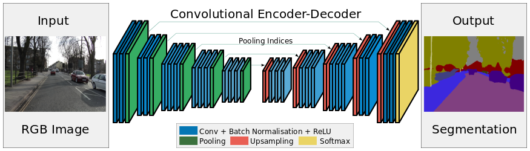
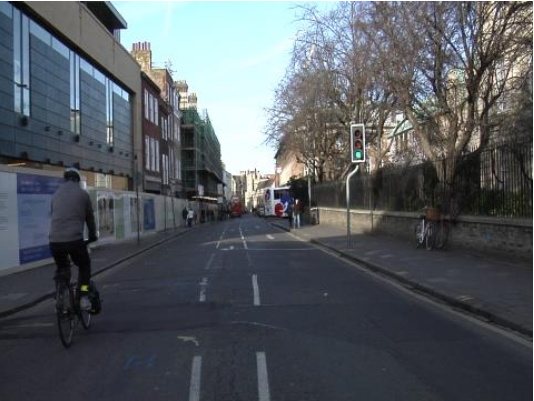
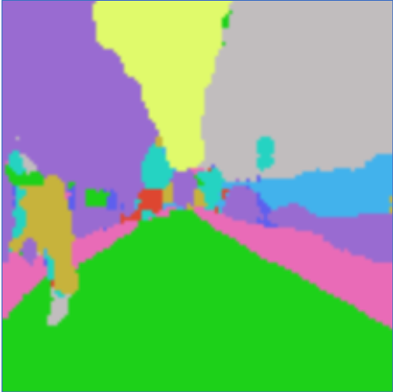
The goal of this project was to perform classification given an image. The data was modelled into a likelihood function using models like Gaussian, Mixture Of Gaussian etc and then using Bayes rule I found out the Posterior probability that quatizes whether a given image is a face or non-face. The first image gives mean of the face dataset for modelling likelihood function using Gaussian Distribution while the second image represents the covariance of the face dataset. We used the AFLW (Annotated Facial Landmark in Wild) dataset.
The goal of this project was to perform classification given an image. We selected the AFLW dataset and implemented two architectures one using PyTorch and second using Tensorflow. The code was executed both on CPU as well as GPU for learning purpose and we were succesfully able to perform the classification with 92% accuracy.
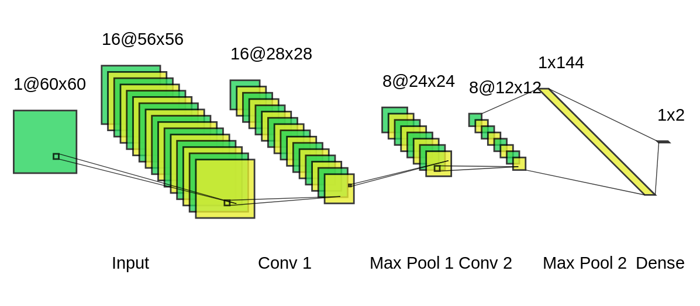
In this project, I implemented a script that given an image of a any box with 3 point perspective was able to construct a 3D model using the texture maps obtained from the homography matrices. The key concepts that were implemented within the scripts were Line Segment Detector, RANSAC algorithm Vanishing point estimation, Estimation of the Projection matrices, Estimation of Homography matrices, Calculating the texture maps and 3D stiching using a VRML file.
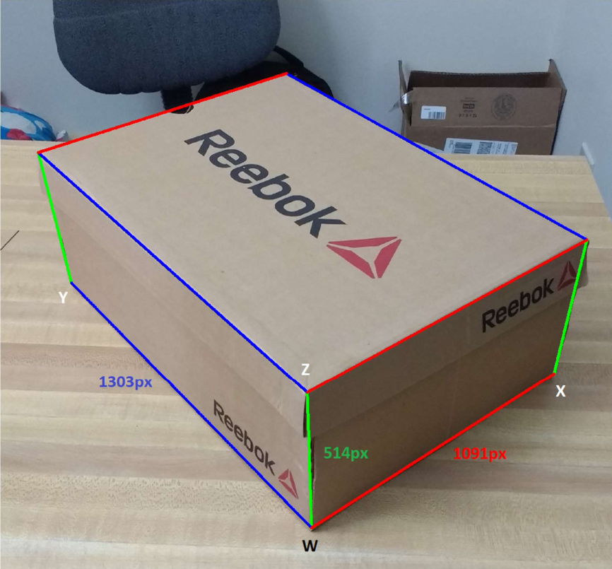
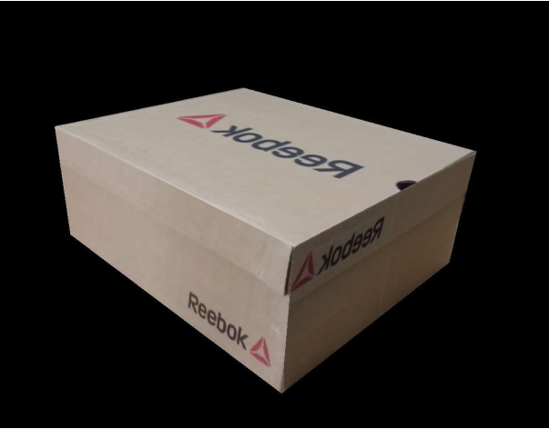
The goal was to classify marine biological species like Foraminifera using image processing and computer vision techniques given their edge probability maps. Foraminifera species is identified from its structure, specifically, from the number of chambers it possesses and its aperture. We used water-shed algorithm techniques to segment the chambers and aperture and succesfully segmented them to 81% of the test data.
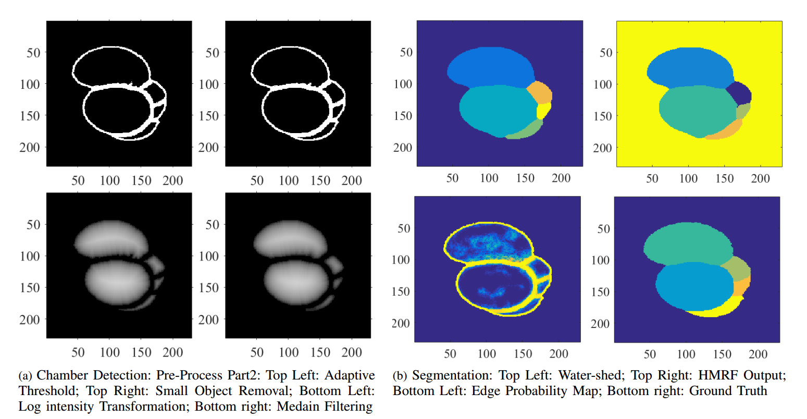
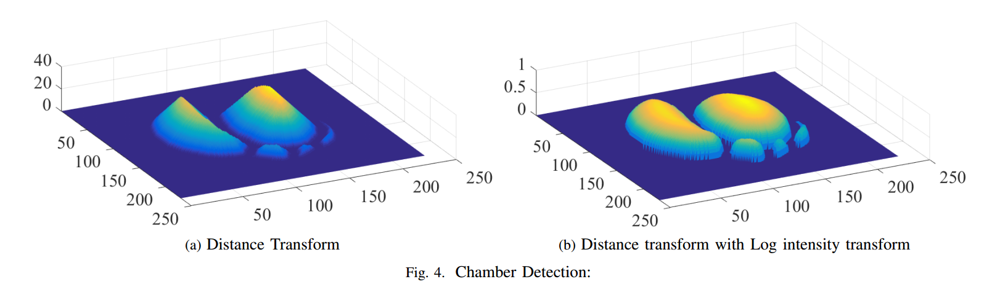
Smart-Manufacturing systems are increasingly being used to perform complex tasks on the factory floor. Most often, these systems have hard-coded cases to achieve a specific set of actions -or to assure the safety of the operations. The hard-coding makes the use complicated to re-deploy a system for different tasks. Therefore, it is necessary to have a flexible framework, which can generate a plan based on an intuitive description with system constraints, while satisfying all safety conditions. In this work, we propose Linear Temporal Logic (LTL)-based autonomy framework for smart-manufacturing systems. Specifically, we describe a general technique for formulating problems using LTL specifications. The use of LTL enables us to specify a manufacturing scenario (e.g. assembly), along with system constraints, as well as assured autonomy. Based on the given LTL formulation, a safe solution satisfying all constraints can be generated using a satisfiability solver. To eliminate the exhaustive and exponential nature of the solver, we reduced the exploration space with a divide and conquer approach in a receding horizon, which brings dramatic improvements in time and enables our solution for real-world applications. Our experimental evaluations indicated that our solution scales linearly as the problem complexity increases. We showcased the feasibility of our approach by integrating TLbased autonomy with the simulations of Gantry robot in Siemens NX Mechatronics Concept Designer and TIA Portal (PLCSIM Advanced) for Siemens S7-1500 TCPU connected to Sinamics drives
A portfolio of my authored and co-authored issued and pending patents focused on advancing SLAM and autonomous drone navigation at Alarm.com